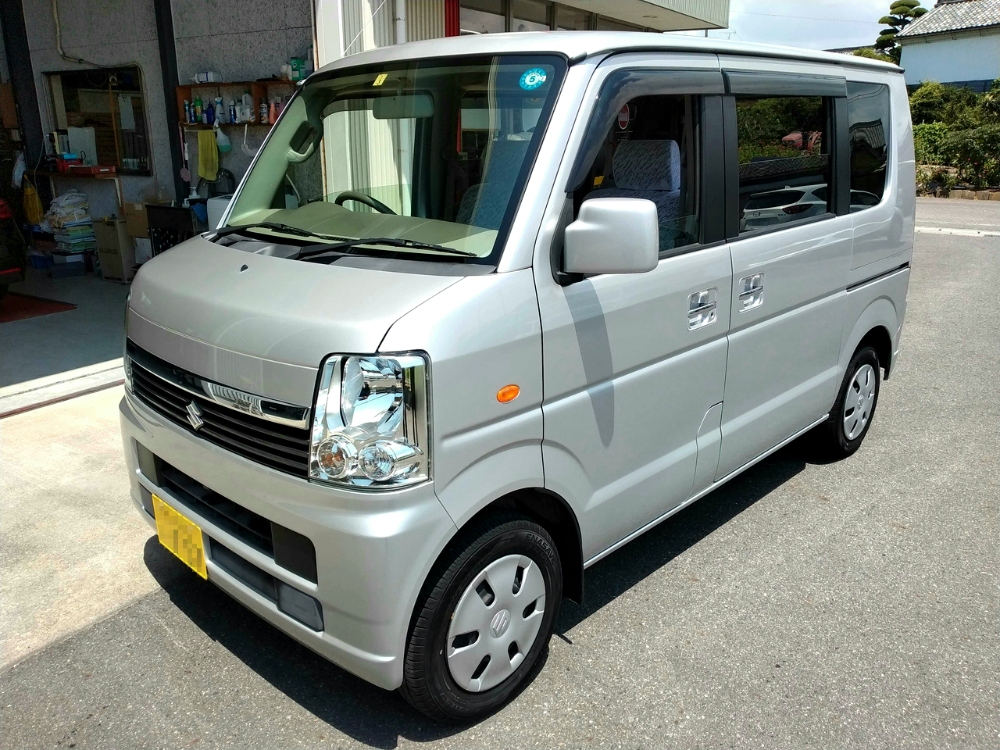

JP / 2WD / 5MT / 2009年式
愛知県の自動車整備工場にて購入。
車両価格35万円、乗り出し価格45万円でした。
| 2025/10/26 | 納車から10000km (総走行52487km) |
| 2025/08/30 | タイヤ交換 (トーヨー NANOENERGY 3 155/70R13) |
| 2025/07/04 | 納車から9000km (総走行51487km) |
| 2025/03/15 | リアガラス交換 (1A15-63-930) |
| 2025/02/16 | 納車から8000km (総走行50487km) |
| 2025/02/09 | 総走行50000km |
| 2025/01/31 | サーモスタット交換 (HKT ZI44DX-88P) |
| 2024/12/08 | 納車から7000km (総走行49487km) |
| 2024/09/07 | 納車から6000km (総走行48487km) |
| 2024/07/22 | 納車から1年 |
| 2024/06/23 | 納車から5000km (総走行47487km) |
| 2024/03/25 | バッテリー交換 (ボッシュ HTP-60B19L) |
| 2024/03/12 | 車検@軽自動車検査協会 三河支所 |
| 2024/02/29 | 納車から4000km (総走行46487km) |
| 2024/02/15 | 納車から3000km (総走行45487km) |
| 2024/02/13 | マジックアーム&蟹バサミクランプ (SmallRig 2163 + 735) 取付 |
| 2023/11/19 | キーレスエントリー電池交換 |
| 2023/11/17 | 納車から2000km (総走行44487km) |
| 2023/09/02 | 納車から1000km (総走行43487km) |
| 2023/08/28 | GPS&レーダー探知機 (ユピテル A210 + OBD12-M) 設置 |
| 2023/08/19 | ポータブルカーナビ (ユピテル YPB732) 設置 |
| 2023/08/03 | FMトランスミッター (LEHXZJ HY92) 取付 |
| 2023/07/22 | 納車 |
| 日付 | 給油地 | 給油量 | トリップメーター距離 | 燃費（満タン法） |
|---|---|---|---|---|
| 2025/12/14 | 愛知県岡崎市 | 28.26 L | 490.4 km | 17.35 km/L |
| 2025/10/12 | 愛知県岡崎市 | 25.00 L | 408.3 km | 16.33 km/L |
| 2025/08/09 | 愛知県刈谷市 | 30.92 L | 504.0 km | 16.30 km/L |
| 2025/06/28 | 三重県四日市市 | 26.07 L | 474.1 km | 18.19 km/L |
| 2025/05/02 | 愛知県岡崎市 | 29.59 L | 522.4 km | 17.65 km/L |
| 2025/02/16 | 京都府京田辺市 | 26.24 L | 479.6 km | 18.28 km/L |
| 2025/02/02 | 愛知県岡崎市 | 25.15 L | 381.3 km | 15.16 km/L |
| 2024/12/14 | 愛知県名古屋市 | 29.92 L | 497.0 km | 16.61 km/L |
| 2024/11/08 | 愛知県刈谷市 | 30.27 L | 523.8 km | 17.30 km/L |
| 2024/09/08 | 愛知県岡崎市 | 25.40 L | 383.6 km | 15.10 km/L |
| 2024/08/09 | 三重県四日市市 | 28.53 L | 473.4 km | 16.59 km/L |
| 2024/07/07 | 愛知県岡崎市 | 27.92 L | 473.8 km | 16.97 km/L |
| 2024/06/02 | 静岡県静岡市 | 22.43 L | 373.8 km | 16.67 km/L |
| 2024/03/26 | 愛知県岡崎市 | 22.36 L | 322.8 km | 14.44 km/L |
| 2024/02/29 | 愛知県豊川市 | 31.26 L | 555.6 km | 17.77 km/L |
| 2024/02/17 | 千葉県流山市 | 26.96 L | 449.9 km | 16.69 km/L |
| 2024/02/15 | 静岡県藤枝市 | 19.65 L | 333.5 km | 16.97 km/L |
| 2024/01/20 | 愛知県岡崎市 | 32.59 L | 530.4 km | 16.27 km/L |
| 2023/11/19 | 愛知県豊川市 | 29.65 L | 520.9 km | 17.57 km/L |
| 2023/09/27 | 愛知県豊川市 | 28.74 L | 434.3 km | 15.11 km/L |
| 2023/09/26 | 静岡県浜松市 | 29.69 L | 413.5 km | 13.93 km/L |
| 2023/08/16 | 愛知県西尾市 | 25.82 L | 407.8 km | 15.80 km/L |
| 2023/08/03 | 愛知県豊川市 | 27.67 L | 359.5 km | 13.00 km/L |
| 日付 | 場所 | 総走行距離 | 商品名 | 備考 |
|---|---|---|---|---|
| 2024/09/08 | 愛知県岡崎市 | 48518 km | コバック ハイポテンシャルオイル (5W-30) | |
| 2023/07/22 | 愛知県西尾市 | 42487 km | ワコーズ プロステージS (0W-30) | オイルエレメント交換 |